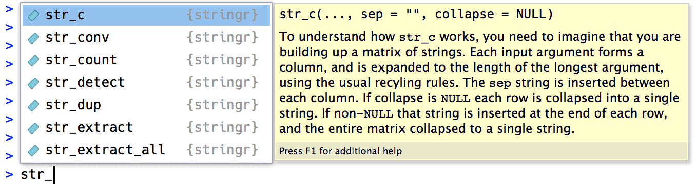

library(tidyverse)
library(babynames)Strings
Introduction
So far, you’ve used a bunch of strings without learning much about the details. Now it’s time to dive into them, learn what makes strings tick, and master some of the powerful string manipulation tools you have at your disposal.
We’ll begin with the details of creating strings and character vectors. You’ll then dive into creating strings from data, then the opposite: extracting strings from data. We’ll then discuss tools that work with individual letters. The chapter finishes with functions that work with individual letters and a brief discussion of where your expectations from English might steer you wrong when working with other languages.
We’ll keep working with strings in the next chapter, where you’ll learn more about the power of regular expressions.
Prerequisites
In this chapter, we’ll use functions from the stringr package, which is part of the core tidyverse. We’ll also use the babynames data since it provides some fun strings to manipulate.
You can quickly tell when you’re using a stringr function because all stringr functions start with str_. This is particularly useful if you use RStudio because typing str_ will trigger autocomplete, allowing you to jog your memory of the available functions.

Creating a string
We’ve created strings in passing earlier in the book but didn’t discuss the details. Firstly, you can create a string using either single quotes (') or double quotes ("). There’s no difference in behavior between the two, so in the interests of consistency, the tidyverse style guide recommends using ", unless the string contains multiple ".
string1 <- "This is a string"
string2 <- 'If I want to include a "quote" inside a string, I use single quotes'If you forget to close a quote, you’ll see +, the continuation prompt:
> "This is a string without a closing quote
+
+
+ HELP I'M STUCK IN A STRINGIf this happens to you and you can’t figure out which quote to close, press Escape to cancel and try again.
Escapes
To include a literal single or double quote in a string, you can use \ to “escape” it:
double_quote <- "\"" # or '"'
single_quote <- '\'' # or "'"So if you want to include a literal backslash in your string, you’ll need to escape it: "\\":
backslash <- "\\"Beware that the printed representation of a string is not the same as the string itself because the printed representation shows the escapes (in other words, when you print a string, you can copy and paste the output to recreate that string). To see the raw contents of the string, use str_view()1:
x <- c(single_quote, double_quote, backslash)
x
#> [1] "'" "\"" "\\"
str_view(x)
#> [1] │ '
#> [2] │ "
#> [3] │ \Raw strings
Creating a string with multiple quotes or backslashes gets confusing quickly. To illustrate the problem, let’s create a string that contains the contents of the code block where we define the double_quote and single_quote variables:
tricky <- "double_quote <- \"\\\"\" # or '\"'
single_quote <- '\\'' # or \"'\""
str_view(tricky)
#> [1] │ double_quote <- "\"" # or '"'
#> │ single_quote <- '\'' # or "'"That’s a lot of backslashes! (This is sometimes called leaning toothpick syndrome.) To eliminate the escaping, you can instead use a raw string2:
tricky <- r"(double_quote <- "\"" # or '"'
single_quote <- '\'' # or "'")"
str_view(tricky)
#> [1] │ double_quote <- "\"" # or '"'
#> │ single_quote <- '\'' # or "'"A raw string usually starts with r"( and finishes with )". But if your string contains )" you can instead use r"[]" or r"{}", and if that’s still not enough, you can insert any number of dashes to make the opening and closing pairs unique, e.g., r"--()--", r"---()---", etc. Raw strings are flexible enough to handle any text.
Other special characters
As well as \", \', and \\, there are a handful of other special characters that may come in handy. The most common are \n, a new line, and \t, tab. You’ll also sometimes see strings containing Unicode escapes that start with \u or \U. This is a way of writing non-English characters that work on all systems. You can see the complete list of other special characters in ?Quotes.
x <- c("one\ntwo", "one\ttwo", "\u00b5", "\U0001f604")
x
#> [1] "one\ntwo" "one\ttwo" "µ" "😄"
str_view(x)
#> [1] │ one
#> │ two
#> [2] │ one{\t}two
#> [3] │ µ
#> [4] │ 😄Note that str_view() uses curly braces for tabs to make them easier to spot3. One of the challenges of working with text is that there’s a variety of ways that white space can end up in the text, so this background helps you recognize that something strange is going on.
Exercises
Create strings that contain the following values:
He said "That's amazing!"\a\b\c\d\\\\\\
Create the string in your R session and print it. What happens to the special “\u00a0”? How does
str_view()display it? Can you do a little googling to figure out what this special character is?x <- "This\u00a0is\u00a0tricky"
Creating many strings from data
Now that you’ve learned the basics of creating a string or two by “hand”, we’ll go into the details of creating strings from other strings. This will help you solve the common problem where you have some text you wrote that you want to combine with strings from a data frame. For example, you might combine “Hello” with a name variable to create a greeting. We’ll show you how to do this with str_c() and str_glue() and how you can use them with mutate(). That naturally raises the question of what stringr functions you might use with summarize(), so we’ll finish this section with a discussion of str_flatten(), which is a summary function for strings.
str_c()
str_c() takes any number of vectors as arguments and returns a character vector:
str_c("x", "y")
#> [1] "xy"
str_c("x", "y", "z")
#> [1] "xyz"
str_c("Hello ", c("John", "Susan"))
#> [1] "Hello John" "Hello Susan"str_c() is very similar to the base paste0(), but is designed to be used with mutate() by obeying the usual tidyverse rules for recycling and propagating missing values:
df <- tibble(name = c("Flora", "David", "Terra", NA))
df |> mutate(greeting = str_c("Hi ", name, "!"))
#> # A tibble: 4 × 2
#> name greeting
#> <chr> <chr>
#> 1 Flora Hi Flora!
#> 2 David Hi David!
#> 3 Terra Hi Terra!
#> 4 <NA> <NA>If you want missing values to display in another way, use coalesce() to replace them. Depending on what you want, you might use it either inside or outside of str_c():
df |>
mutate(
greeting1 = str_c("Hi ", coalesce(name, "you"), "!"),
greeting2 = coalesce(str_c("Hi ", name, "!"), "Hi!")
)
#> # A tibble: 4 × 3
#> name greeting1 greeting2
#> <chr> <chr> <chr>
#> 1 Flora Hi Flora! Hi Flora!
#> 2 David Hi David! Hi David!
#> 3 Terra Hi Terra! Hi Terra!
#> 4 <NA> Hi you! Hi!str_glue()
If you are mixing many fixed and variable strings with str_c(), you’ll notice that you type a lot of "s, making it hard to see the overall goal of the code. An alternative approach is provided by the glue package via str_glue()4. You give it a single string that has a special feature: anything inside {} will be evaluated like it’s outside of the quotes:
df |> mutate(greeting = str_glue("Hi {name}!"))
#> # A tibble: 4 × 2
#> name greeting
#> <chr> <glue>
#> 1 Flora Hi Flora!
#> 2 David Hi David!
#> 3 Terra Hi Terra!
#> 4 <NA> Hi NA!As you can see, str_glue() currently converts missing values to the string "NA", unfortunately making it inconsistent with str_c().
You also might wonder what happens if you need to include a regular { or } in your string. You’re on the right track if you guess you’ll need to escape it somehow. The trick is that glue uses a slightly different escaping technique: instead of prefixing with special character like \, you double up the special characters:
df |> mutate(greeting = str_glue("{{Hi {name}!}}"))
#> # A tibble: 4 × 2
#> name greeting
#> <chr> <glue>
#> 1 Flora {Hi Flora!}
#> 2 David {Hi David!}
#> 3 Terra {Hi Terra!}
#> 4 <NA> {Hi NA!}str_flatten()
str_c() and str_glue() work well with mutate() because their output is the same length as their inputs. What if you want a function that works well with summarize(), i.e. something that always returns a single string? That’s the job of str_flatten()5: it takes a character vector and combines each element of the vector into a single string:
str_flatten(c("x", "y", "z"))
#> [1] "xyz"
str_flatten(c("x", "y", "z"), ", ")
#> [1] "x, y, z"
str_flatten(c("x", "y", "z"), ", ", last = ", and ")
#> [1] "x, y, and z"This makes it work well with summarize():
df <- tribble(
~ name, ~ fruit,
"Carmen", "banana",
"Carmen", "apple",
"Marvin", "nectarine",
"Terence", "cantaloupe",
"Terence", "papaya",
"Terence", "mandarin"
)
df |>
group_by(name) |>
summarize(fruits = str_flatten(fruit, ", "))
#> # A tibble: 3 × 2
#> name fruits
#> <chr> <chr>
#> 1 Carmen banana, apple
#> 2 Marvin nectarine
#> 3 Terence cantaloupe, papaya, mandarinExercises
Compare and contrast the results of
paste0()withstr_c()for the following inputs:str_c("hi ", NA) str_c(letters[1:2], letters[1:3])What’s the difference between
paste()andpaste0()? How can you recreate the equivalent ofpaste()withstr_c()?Convert the following expressions from
str_c()tostr_glue()or vice versa:str_c("The price of ", food, " is ", price)str_glue("I'm {age} years old and live in {country}")str_c("\\section{", title, "}")
Extracting data from strings
It’s very common for multiple variables to be crammed together into a single string. In this section, you’ll learn how to use four tidyr functions to extract them:
df |> separate_longer_delim(col, delim)df |> separate_longer_position(col, width)df |> separate_wider_delim(col, delim, names)df |> separate_wider_position(col, widths)
If you look closely, you can see there’s a common pattern here: separate_, then longer or wider, then _, then by delim or position. That’s because these four functions are composed of two simpler primitives:
- Just like with
pivot_longer()andpivot_wider(),_longerfunctions make the input data frame longer by creating new rows and_widerfunctions make the input data frame wider by generating new columns. delimsplits up a string with a delimiter like", "or" ";positionsplits at specified widths, likec(3, 5, 2).
We’ll return to the last member of this family, separate_wider_regex(), in ?@sec-regular-expressions. It’s the most flexible of the wider functions, but you need to know something about regular expressions before you can use it.
The following two sections will give you the basic idea behind these separate functions, first separating into rows (which is a little simpler) and then separating into columns. We’ll finish off by discussing the tools that the wider functions give you to diagnose problems.
Separating into rows
Separating a string into rows tends to be most useful when the number of components varies from row to row. The most common case is requiring separate_longer_delim() to split based on a delimiter:
df1 <- tibble(x = c("a,b,c", "d,e", "f"))
df1 |>
separate_longer_delim(x, delim = ",")
#> # A tibble: 6 × 1
#> x
#> <chr>
#> 1 a
#> 2 b
#> 3 c
#> 4 d
#> 5 e
#> 6 fIt’s rarer to see separate_longer_position() in the wild, but some older datasets do use a very compact format where each character is used to record a value:
df2 <- tibble(x = c("1211", "131", "21"))
df2 |>
separate_longer_position(x, width = 1)
#> # A tibble: 9 × 1
#> x
#> <chr>
#> 1 1
#> 2 2
#> 3 1
#> 4 1
#> 5 1
#> 6 3
#> # ℹ 3 more rowsSeparating into columns
Separating a string into columns tends to be most useful when there are a fixed number of components in each string, and you want to spread them into columns. They are slightly more complicated than their longer equivalents because you need to name the columns. For example, in this following dataset, x is made up of a code, an edition number, and a year, separated by ".". To use separate_wider_delim(), we supply the delimiter and the names in two arguments:
df3 <- tibble(x = c("a10.1.2022", "b10.2.2011", "e15.1.2015"))
df3 |>
separate_wider_delim(
x,
delim = ".",
names = c("code", "edition", "year")
)
#> # A tibble: 3 × 3
#> code edition year
#> <chr> <chr> <chr>
#> 1 a10 1 2022
#> 2 b10 2 2011
#> 3 e15 1 2015If a specific piece is not useful you can use an NA name to omit it from the results:
df3 |>
separate_wider_delim(
x,
delim = ".",
names = c("code", NA, "year")
)
#> # A tibble: 3 × 2
#> code year
#> <chr> <chr>
#> 1 a10 2022
#> 2 b10 2011
#> 3 e15 2015separate_wider_position() works a little differently because you typically want to specify the width of each column. So you give it a named integer vector, where the name gives the name of the new column, and the value is the number of characters it occupies. You can omit values from the output by not naming them:
df4 <- tibble(x = c("202215TX", "202122LA", "202325CA"))
df4 |>
separate_wider_position(
x,
widths = c(year = 4, age = 2, state = 2)
)
#> # A tibble: 3 × 3
#> year age state
#> <chr> <chr> <chr>
#> 1 2022 15 TX
#> 2 2021 22 LA
#> 3 2023 25 CADiagnosing widening problems
separate_wider_delim()6 requires a fixed and known set of columns. What happens if some of the rows don’t have the expected number of pieces? There are two possible problems, too few or too many pieces, so separate_wider_delim() provides two arguments to help: too_few and too_many. Let’s first look at the too_few case with the following sample dataset:
df <- tibble(x = c("1-1-1", "1-1-2", "1-3", "1-3-2", "1"))
df |>
separate_wider_delim(
x,
delim = "-",
names = c("x", "y", "z")
)
#> Error in `separate_wider_delim()`:
#> ! Expected 3 pieces in each element of `x`.
#> ! 2 values were too short.
#> ℹ Use `too_few = "debug"` to diagnose the problem.
#> ℹ Use `too_few = "align_start"/"align_end"` to silence this message.You’ll notice that we get an error, but the error gives us some suggestions on how you might proceed. Let’s start by debugging the problem:
debug <- df |>
separate_wider_delim(
x,
delim = "-",
names = c("x", "y", "z"),
too_few = "debug"
)
#> Warning: Debug mode activated: adding variables `x_ok`, `x_pieces`, and
#> `x_remainder`.
debug
#> # A tibble: 5 × 6
#> x y z x_ok x_pieces x_remainder
#> <chr> <chr> <chr> <lgl> <int> <chr>
#> 1 1-1-1 1 1 TRUE 3 ""
#> 2 1-1-2 1 2 TRUE 3 ""
#> 3 1-3 3 <NA> FALSE 2 ""
#> 4 1-3-2 3 2 TRUE 3 ""
#> 5 1 <NA> <NA> FALSE 1 ""When you use the debug mode, you get three extra columns added to the output: x_ok, x_pieces, and x_remainder (if you separate a variable with a different name, you’ll get a different prefix). Here, x_ok lets you quickly find the inputs that failed:
debug |> filter(!x_ok)
#> # A tibble: 2 × 6
#> x y z x_ok x_pieces x_remainder
#> <chr> <chr> <chr> <lgl> <int> <chr>
#> 1 1-3 3 <NA> FALSE 2 ""
#> 2 1 <NA> <NA> FALSE 1 ""x_pieces tells us how many pieces were found, compared to the expected 3 (the length of names). x_remainder isn’t useful when there are too few pieces, but we’ll see it again shortly.
Sometimes looking at this debugging information will reveal a problem with your delimiter strategy or suggest that you need to do more preprocessing before separating. In that case, fix the problem upstream and make sure to remove too_few = "debug" to ensure that new problems become errors.
In other cases, you may want to fill in the missing pieces with NAs and move on. That’s the job of too_few = "align_start" and too_few = "align_end" which allow you to control where the NAs should go:
df |>
separate_wider_delim(
x,
delim = "-",
names = c("x", "y", "z"),
too_few = "align_start"
)
#> # A tibble: 5 × 3
#> x y z
#> <chr> <chr> <chr>
#> 1 1 1 1
#> 2 1 1 2
#> 3 1 3 <NA>
#> 4 1 3 2
#> 5 1 <NA> <NA>The same principles apply if you have too many pieces:
df <- tibble(x = c("1-1-1", "1-1-2", "1-3-5-6", "1-3-2", "1-3-5-7-9"))
df |>
separate_wider_delim(
x,
delim = "-",
names = c("x", "y", "z")
)
#> Error in `separate_wider_delim()`:
#> ! Expected 3 pieces in each element of `x`.
#> ! 2 values were too long.
#> ℹ Use `too_many = "debug"` to diagnose the problem.
#> ℹ Use `too_many = "drop"/"merge"` to silence this message.But now, when we debug the result, you can see the purpose of x_remainder:
debug <- df |>
separate_wider_delim(
x,
delim = "-",
names = c("x", "y", "z"),
too_many = "debug"
)
#> Warning: Debug mode activated: adding variables `x_ok`, `x_pieces`, and
#> `x_remainder`.
debug |> filter(!x_ok)
#> # A tibble: 2 × 6
#> x y z x_ok x_pieces x_remainder
#> <chr> <chr> <chr> <lgl> <int> <chr>
#> 1 1-3-5-6 3 5 FALSE 4 -6
#> 2 1-3-5-7-9 3 5 FALSE 5 -7-9You have a slightly different set of options for handling too many pieces: you can either silently “drop” any additional pieces or “merge” them all into the final column:
df |>
separate_wider_delim(
x,
delim = "-",
names = c("x", "y", "z"),
too_many = "drop"
)
#> # A tibble: 5 × 3
#> x y z
#> <chr> <chr> <chr>
#> 1 1 1 1
#> 2 1 1 2
#> 3 1 3 5
#> 4 1 3 2
#> 5 1 3 5
df |>
separate_wider_delim(
x,
delim = "-",
names = c("x", "y", "z"),
too_many = "merge"
)
#> # A tibble: 5 × 3
#> x y z
#> <chr> <chr> <chr>
#> 1 1 1 1
#> 2 1 1 2
#> 3 1 3 5-6
#> 4 1 3 2
#> 5 1 3 5-7-9Letters
In this section, we’ll introduce you to functions that allow you to work with the individual letters within a string. You’ll learn how to find the length of a string, extract substrings, and handle long strings in plots and tables.
Length
str_length() tells you the number of letters in the string:
str_length(c("a", "R for data science", NA))
#> [1] 1 18 NAYou could use this with count() to find the distribution of lengths of US babynames and then with filter() to look at the longest names, which happen to have 15 letters7:
babynames |>
count(length = str_length(name), wt = n)
#> # A tibble: 14 × 2
#> length n
#> <int> <int>
#> 1 2 338150
#> 2 3 8589596
#> 3 4 48506739
#> 4 5 87011607
#> 5 6 90749404
#> 6 7 72120767
#> # ℹ 8 more rows
babynames |>
filter(str_length(name) == 15) |>
count(name, wt = n, sort = TRUE)
#> # A tibble: 34 × 2
#> name n
#> <chr> <int>
#> 1 Franciscojavier 123
#> 2 Christopherjohn 118
#> 3 Johnchristopher 118
#> 4 Christopherjame 108
#> 5 Christophermich 52
#> 6 Ryanchristopher 45
#> # ℹ 28 more rowsSubsetting
You can extract parts of a string using str_sub(string, start, end), where start and end are the positions where the substring should start and end. The start and end arguments are inclusive, so the length of the returned string will be end - start + 1:
x <- c("Apple", "Banana", "Pear")
str_sub(x, 1, 3)
#> [1] "App" "Ban" "Pea"You can use negative values to count back from the end of the string: -1 is the last character, -2 is the second to last character, etc.
str_sub(x, -3, -1)
#> [1] "ple" "ana" "ear"Note that str_sub() won’t fail if the string is too short: it will just return as much as possible:
str_sub("a", 1, 5)
#> [1] "a"We could use str_sub() with mutate() to find the first and last letter of each name:
babynames |>
mutate(
first = str_sub(name, 1, 1),
last = str_sub(name, -1, -1)
)
#> # A tibble: 1,924,665 × 7
#> year sex name n prop first last
#> <dbl> <chr> <chr> <int> <dbl> <chr> <chr>
#> 1 1880 F Mary 7065 0.0724 M y
#> 2 1880 F Anna 2604 0.0267 A a
#> 3 1880 F Emma 2003 0.0205 E a
#> 4 1880 F Elizabeth 1939 0.0199 E h
#> 5 1880 F Minnie 1746 0.0179 M e
#> 6 1880 F Margaret 1578 0.0162 M t
#> # ℹ 1,924,659 more rowsExercises
- When computing the distribution of the length of babynames, why did we use
wt = n? - Use
str_length()andstr_sub()to extract the middle letter from each baby name. What will you do if the string has an even number of characters? - Are there any major trends in the length of babynames over time? What about the popularity of first and last letters?
Non-English text
So far, we’ve focused on English language text which is particularly easy to work with for two reasons. Firstly, the English alphabet is relatively simple: there are just 26 letters. Secondly (and maybe more importantly), the computing infrastructure we use today was predominantly designed by English speakers. Unfortunately, we don’t have room for a full treatment of non-English languages. Still, we wanted to draw your attention to some of the biggest challenges you might encounter: encoding, letter variations, and locale-dependent functions.
Encoding
When working with non-English text, the first challenge is often the encoding. To understand what’s going on, we need to dive into how computers represent strings. In R, we can get at the underlying representation of a string using charToRaw():
charToRaw("Hadley")
#> [1] 48 61 64 6c 65 79Each of these six hexadecimal numbers represents one letter: 48 is H, 61 is a, and so on. The mapping from hexadecimal number to character is called the encoding, and in this case, the encoding is called ASCII. ASCII does a great job of representing English characters because it’s the American Standard Code for Information Interchange.
Things aren’t so easy for languages other than English. In the early days of computing, there were many competing standards for encoding non-English characters. For example, there were two different encodings for Europe: Latin1 (aka ISO-8859-1) was used for Western European languages, and Latin2 (aka ISO-8859-2) was used for Central European languages. In Latin1, the byte b1 is “±”, but in Latin2, it’s “ą”! Fortunately, today there is one standard that is supported almost everywhere: UTF-8. UTF-8 can encode just about every character used by humans today and many extra symbols like emojis.
readr uses UTF-8 everywhere. This is a good default but will fail for data produced by older systems that don’t use UTF-8. If this happens, your strings will look weird when you print them. Sometimes just one or two characters might be messed up; other times, you’ll get complete gibberish. For example here are two inline CSVs with unusual encodings8:
x1 <- "text\nEl Ni\xf1o was particularly bad this year"
read_csv(x1)$text
#> [1] "El Ni\xf1o was particularly bad this year"
x2 <- "text\n\x82\xb1\x82\xf1\x82\xc9\x82\xbf\x82\xcd"
read_csv(x2)$text
#> [1] "\x82\xb1\x82\xf1\x82ɂ\xbf\x82\xcd"To read these correctly, you specify the encoding via the locale argument:
read_csv(x1, locale = locale(encoding = "Latin1"))$text
#> [1] "El Niño was particularly bad this year"
read_csv(x2, locale = locale(encoding = "Shift-JIS"))$text
#> [1] "こんにちは"How do you find the correct encoding? If you’re lucky, it’ll be included somewhere in the data documentation. Unfortunately, that’s rarely the case, so readr provides guess_encoding() to help you figure it out. It’s not foolproof and works better when you have lots of text (unlike here), but it’s a reasonable place to start. Expect to try a few different encodings before you find the right one.
Encodings are a rich and complex topic; we’ve only scratched the surface here. If you’d like to learn more, we recommend reading the detailed explanation at http://kunststube.net/encoding/.
Letter variations
Working in languages with accents poses a significant challenge when determining the position of letters (e.g., with str_length() and str_sub()) as accented letters might be encoded as a single individual character (e.g., ü) or as two characters by combining an unaccented letter (e.g., u) with a diacritic mark (e.g., ¨). For example, this code shows two ways of representing ü that look identical:
u <- c("\u00fc", "u\u0308")
str_view(u)
#> [1] │ ü
#> [2] │ üBut both strings differ in length, and their first characters are different:
str_length(u)
#> [1] 1 2
str_sub(u, 1, 1)
#> [1] "ü" "u"Finally, note that a comparison of these strings with == interprets these strings as different, while the handy str_equal() function in stringr recognizes that both have the same appearance:
u[[1]] == u[[2]]
#> [1] FALSE
str_equal(u[[1]], u[[2]])
#> [1] TRUELocale-dependent functions
Finally, there are a handful of stringr functions whose behavior depends on your locale. A locale is similar to a language but includes an optional region specifier to handle regional variations within a language. A locale is specified by a lower-case language abbreviation, optionally followed by a _ and an upper-case region identifier. For example, “en” is English, “en_GB” is British English, and “en_US” is American English. If you don’t already know the code for your language, Wikipedia has a good list, and you can see which are supported in stringr by looking at stringi::stri_locale_list().
Base R string functions automatically use the locale set by your operating system. This means that base R string functions do what you expect for your language, but your code might work differently if you share it with someone who lives in a different country. To avoid this problem, stringr defaults to English rules by using the “en” locale and requires you to specify the locale argument to override it. Fortunately, there are two sets of functions where the locale really matters: changing case and sorting.
The rules for changing cases differ among languages. For example, Turkish has two i’s: with and without a dot. Since they’re two distinct letters, they’re capitalized differently:
str_to_upper(c("i", "ı"))
#> [1] "I" "I"
str_to_upper(c("i", "ı"), locale = "tr")
#> [1] "İ" "I"Sorting strings depends on the order of the alphabet, and the order of the alphabet is not the same in every language9! Here’s an example: in Czech, “ch” is a compound letter that appears after h in the alphabet.
str_sort(c("a", "c", "ch", "h", "z"))
#> [1] "a" "c" "ch" "h" "z"
str_sort(c("a", "c", "ch", "h", "z"), locale = "cs")
#> [1] "a" "c" "h" "ch" "z"This also comes up when sorting strings with dplyr::arrange(), which is why it also has a locale argument.
Summary
In this chapter, you’ve learned about some of the power of the stringr package: how to create, combine, and extract strings, and about some of the challenges you might face with non-English strings. Now it’s time to learn one of the most important and powerful tools for working with strings: regular expressions. Regular expressions are a very concise but very expressive language for describing patterns within strings and are the topic of the next chapter.
Or use the base R function
writeLines().↩︎Available in R 4.0.0 and above.↩︎
str_view()also uses color to bring tabs, spaces, matches, etc. to your attention. The colors don’t currently show up in the book, but you’ll notice them when running code interactively.↩︎If you’re not using stringr, you can also access it directly with
glue::glue().↩︎The base R equivalent is
paste()used with thecollapseargument.↩︎The same principles apply to
separate_wider_position()andseparate_wider_regex().↩︎Looking at these entries, we’d guess that the babynames data drops spaces or hyphens and truncates after 15 letters.↩︎
Here I’m using the special
\xto encode binary data directly into a string.↩︎Sorting in languages that don’t have an alphabet, like Chinese, is more complicated still.↩︎